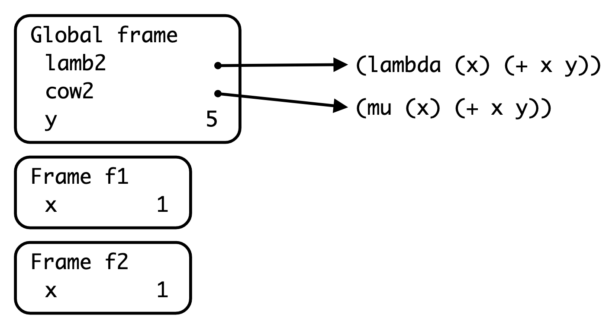
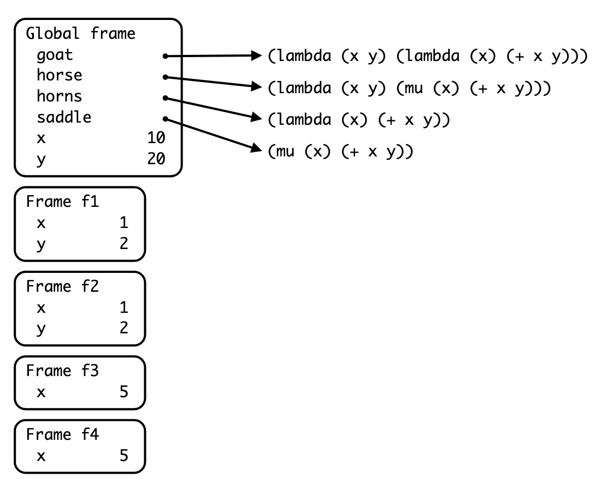

Discussion 14: Final Review
Final Review
The following worksheet is final review! It covers various topics that have been seen throughout the semester.
Your TA will not be able to get to all of the problems on this worksheet so feel free to work through the remaining problems on your own. Bring any questions you have to office hours or post them on piazza.
Good luck on the final and congratulations on making it to the last discussion of CS61A!
Recursion
Q1: Paths List
(Adapted from Fall 2013) Fill in the blanks in the implementation of paths, which
takes as input two positive integers x and y. It returns a list of paths, where
each path is a list containing steps to reach y from x by repeated incrementing or
doubling. For instance, we can reach 9 from 3 by incrementing to 4, doubling to 8,
then incrementing again to 9, so one path is [3, 4, 8, 9]
def paths(x, y):
"""Return a list of ways to reach y from x by repeated
incrementing or doubling.
>>> paths(3, 5)
[[3, 4, 5]]
>>> sorted(paths(3, 6))
[[3, 4, 5, 6], [3, 6]]
>>> sorted(paths(3, 9))
[[3, 4, 5, 6, 7, 8, 9], [3, 4, 8, 9], [3, 6, 7, 8, 9]]
>>> paths(3, 3) # No calls is a valid path
[[3]]
"""
if x > y:
return []
elif x == y:
return [[x]]
else:
a = paths(x + 1, y)
b = paths(x * 2, y)
return [[x] + subpath for subpath in a + b]
Mutation
Q2: Reverse
Write a function that reverses the given list. Be sure to mutate the original list.
This is practice, so don't use the built-in reverse function!
def reverse(lst):
"""Reverses lst using mutation.
>>> original_list = [5, -1, 29, 0]
>>> reverse(original_list)
>>> original_list
[0, 29, -1, 5]
>>> odd_list = [42, 72, -8]
>>> reverse(odd_list)
>>> odd_list
[-8, 72, 42]
"""
# iterative solution
midpoint = len(lst) // 2
last = len(lst) - 1
for i in range(midpoint):
lst[i], lst[last - i] = lst[last - i], lst[i]
Trees
Q3: Reverse Other
Write a function reverse_other that mutates the tree such that labels on
every other (odd-depth) level are reversed. For example,
Tree(1,[Tree(2, [Tree(4)]), Tree(3)]) becomes Tree(1,[Tree(3, [Tree(4)]), Tree(2)]).
Notice that the nodes themselves are not reversed; only the labels are.
def reverse_other(t):
"""Mutates the tree such that nodes on every other (odd-depth)
level have the labels of their branches all reversed.
>>> t = Tree(1, [Tree(2), Tree(3), Tree(4)])
>>> reverse_other(t)
>>> t
Tree(1, [Tree(4), Tree(3), Tree(2)])
>>> t = Tree(1, [Tree(2, [Tree(3, [Tree(4), Tree(5)]), Tree(6, [Tree(7)])]), Tree(8)])
>>> reverse_other(t)
>>> t
Tree(1, [Tree(8, [Tree(3, [Tree(5), Tree(4)]), Tree(6, [Tree(7)])]), Tree(2)])
"""
def reverse_helper(t, need_reverse):
if t.is_leaf():
return
new_labs = [child.label for child in t.branches][::-1]
for i in range(len(t.branches)):
child = t.branches[i]
reverse_helper(child, not need_reverse)
if need_reverse:
child.label = new_labs[i]
reverse_helper(t, True)
Linked Lists
Q4: Multiply Links
Write a function that takes in a Python list of linked lists and multiplies them element-wise. It should return a new linked list.
If not all of the Link objects are of equal length, return a
linked list whose length is that of the shortest linked list given. You
may assume the Link objects are shallow linked lists, and that
lst_of_lnks contains at least one linked list.
def multiply_lnks(lst_of_lnks):
"""
>>> a = Link(2, Link(3, Link(5)))
>>> b = Link(6, Link(4, Link(2)))
>>> c = Link(4, Link(1, Link(0, Link(2))))
>>> p = multiply_lnks([a, b, c])
>>> p.first
48
>>> p.rest.first
12
>>> p.rest.rest.rest is Link.empty
True
"""
# Implementation Note: you might not need all lines in this skeleton code
product = 1
for lnk in lst_of_lnks:
if lnk is Link.empty:
return Link.empty
product *= lnk.first
lst_of_lnks_rests = [lnk.rest for lnk in lst_of_lnks]
return Link(product, multiply_lnks(lst_of_lnks_rests))
Links is empty, we can return the empty linked list as we're not going
to multiply anything.
Otherwise, we compute the product of all the firsts in our list of
Links. Then, the subproblem we use here is the rest of all the linked
lists in our list of Links. Remember that the result of calling
multiply_lnks will be a linked list! We'll use the product we've
built so far as the first item in the returned Link, and then the
result of the recursive call as the rest of that Link.
Next, we have the iterative solution:
def multiply_lnks(lst_of_lnks):
"""
>>> a = Link(2, Link(3, Link(5)))
>>> b = Link(6, Link(4, Link(2)))
>>> c = Link(4, Link(1, Link(0, Link(2))))
>>> p = multiply_lnks([a, b, c])
>>> p.first
48
>>> p.rest.first
12
>>> p.rest.rest.rest is Link.empty
True
"""
# Alternate iterative approach
import operator
from functools import reduce
def prod(factors):
return reduce(operator.mul, factors, 1)
head = Link.empty
tail = head
while Link.empty not in lst_of_lnks:
all_prod = prod([l.first for l in lst_of_lnks])
if head is Link.empty:
head = Link(all_prod)
tail = head
else:
tail.rest = Link(all_prod)
tail = tail.rest
lst_of_lnks = [l.rest for l in lst_of_lnks]
return headThe iterative solution is a bit more involved than the recursive solution. Instead of building the list backwards as in the recursive solution (because of the order that the recursive calls result in, the last item in our list will be finished first), we'll build the resulting linked list as we go along.
We usehead and tail to track the front and end of the new
linked list we're creating. Our stopping condition for the loop is if any of the
Links in our list of Links runs out of items.
Finally, there's some special handling for the first item. We need to update both head and tail in that case. Otherwise, we just append to the end of our list using tail, and update tail.
Scheme
Q5: Group by Non-Decreasing
Define a function nondecreaselist, which takes in a scheme list of numbers and outputs a list of lists, which overall has the same numbers in the same order, but grouped into lists that are non-decreasing.
For example, if the input is a stream containing elements
(1 2 3 4 1 2 3 4 1 1 1 2 1 1 0 4 3 2 1)the output should contain elements
((1 2 3 4) (1 2 3 4) (1 1 1 2) (1 1) (0 4) (3) (2) (1))Note: The skeleton code is just a suggestion; feel free to use your own structure if you prefer.
Your Answer Run in 61A Code(define (nondecreaselist s)
(if (null? s)
nil
(let ((rest (nondecreaselist (cdr s)) ))
(if (or (null? (cdr s)) (> (car s) (car (cdr s))))
(cons (list (car s)) rest)
(cons (cons (car s) (car rest)) (cdr rest))
)
)
)
)
(expect (nondecreaselist '(1 2 3 1 2 3)) ((1 2 3) (1 2 3)))
(expect (nondecreaselist '(1 2 3 4 1 2 3 4 1 1 1 2 1 1 0 4 3 2 1))
((1 2 3 4) (1 2 3 4) (1 1 1 2) (1 1) (0 4) (3) (2) (1)))Environment Diagrams
Q6: To Scheme An Environment Diagram
mu, implemented in the Scheme project as MuProcedure, allows us to create
procedures that are dynamically scoped.
This means that calling a mu procedure creates a new frame whose parent is
the frame in which it was called (dynamic scoping).
In contrast, calling a lambda procedure creates a new frame whose parent is
the frame in which it was defined (lexical scoping).
You can also find mu described in the
Scheme Specification.
For an interactive version of each diagram, copy-paste the code into 61A Code, and click the yellow bug icon on the top right. That icon starts up the debugger and environment diagram visualizer for code.cs61a.org.
Say that we are given the following section of code:
(define lamb2 (lambda (x) (+ x y)))
(define cow2 (mu (x) (+ x y)))
(define y 5)
(lamb2 1)
(cow2 1)scm> (define lamb2 (lambda (x) (+ x y)))
lamb2
scm> (define cow2 (mu (x) (+ x y)))
cow2
scm> (define y 5)
y
scm> (lamb2 1)
6
scm> (cow2 1)
6Running the full code results in this environment diagram:

What is the parent frame of frame f1?
The Global frame, since that is where the lambda procedure was defined.
What is the parent frame of frame f2?
The Global frame, since that is where the mu procedure was called.
Now let's say we have the following section of code:
(define (goat x y) (lambda (x) (+ x y)))
(define (horse x y) (mu (x) (+ x y)))
(define horns (goat 1 2))
(define saddle (horse 1 2))
(define x 10)
(define y 20)
(horns 5)
(saddle 5)scm> (define (goat x y) (lambda (x) (+ x y)))
goat
scm> (define (horse x y) (mu (x) (+ x y)))
horse
scm> (define horns (goat 1 2))
horns
scm> (define saddle (horse 1 2))
saddle
scm> (define x 10)
x
scm> (define y 20)
y
scm> (horns 5)
7
scm> (saddle 5)
25
scm>Running the entire code block gives you the diagram:

Which frame is created by the call to (goat 1 2), and what is the parent of
this frame?
(goat 1 2) opens frame f1, whose parent is the Global frame.
What kind of procedure is horns, and what scoping rule does it use?
horns is a lambda procedure, so it is lexically scoped.
Which frame is created by the call to (horse 1 2), and what is the parent of
this frame?
(horse 1 2) opens frame f2, whose parent is the Global frame.
What kind of procedure is saddle, and what scoping rule does it use?
saddle is a mu procedure, so it is dynamically scoped.
Which frame is created by the call to (horns 5), and what is the parent of
this frame?
(horns 5) opens frame f3, whose parent is frame f1,
the frame in which the lambda procedure was defined.
Which frame is created by the call to (saddle 5), and what is the parent of
this frame?
(saddle 5) opens frame f4, whose parent is the Global frame,
the frame in which the mu procedure was called.
What would be the output of the lines (horns 5) and (saddle 5)?
(horns 5) would output 7 since it looks up y in f1. (saddle 5) would ouput 25 since it looks up y in the Global frame.
Would there be any difference in output if horse was defined using a lambda
as opposed to a define, e.g. (define horse (lambda (x y) ...)? If so, what?
There would be no difference in output, since using define to define a
procedure is equivalent to using define to define a variable that is
assigned to a lambda procedure in our version of Scheme.
Programs as Data
Q7: Or with Multiple Args
Implement make-long-or, which returns, as a list, a program that takes in any number of expressions and or's them together (applying short-circuiting rules). This procedure should do this without using the or special form. Unlike the make-or procedure, the arguments will be passed in as a list named args.
The behavior of the or procedure is specified by the following doctests:
scm> (define or-program (make-long-or '((print 'hello) (/ 1 0) 3 #f)))
or-program
scm> (eval or-program)
hello
scm> (eval (make-long-or '((= 1 0) #f (+ 1 2) (print 'goodbye))))
3
scm> (eval (make-long-or '((> 3 1))))
#t
scm> (eval (make-long-or '()))
#f(define (make-long-or args)
(cond
((null? args) #f)
(else
`(let ((v1 ,(car args)))
(if v1 v1 ,(make-long-or (cdr args))))
)
)
)Regex
Q8: Phone Number Validator
Create a regular expression that matches phone numbers that are 11, 10, or 7 numbers long.
Phone numbers 7 numbers long have a group of 3 numbers followed by a group of 4 numbers, either separated by a space, a dash, or nothing.
Examples: 123-4567, 1234567, 123 4567
Phone numbers 10 numbers long have a group of 3 numbers followed by a group of 3 numbers followed by a group of 4 numbers, either separated by a space, a dash, or nothing.
Examples: 123-456-7890, 1234567890, 123 456 7890
Phone numbers 11 numbers long have a group of 1 number followed by a group 3 numbers followed by a group of 3 numbers followed by a group of 4 numbers, either separated by a space, a dash, or nothing.
Examples: 1-123-456-7890, 11234567890, 1 123 456 7890
It is fine if spacing/dashes/no space mix! So 123 456-7890 is fine.
Note: The skeleton code is just a suggestion; feel free to use your own structure if you prefer.
Your Answer Run in 61A Codeimport re
def phone_number(string):
"""
>>> phone_number("Song by Logic: 1-800-273-8255")
True
>>> phone_number("123 456 7890")
True
>>> phone_number("1" * 11) and phone_number("1" * 10) and phone_number("1" * 7)
True
>>> phone_number("The secret numbers are 4, 8, 15, 16, 23 and 42 (from the TV show Lost)")
False
>>> phone_number("Belphegor's Prime is 1000000000000066600000000000001")
False
>>> phone_number(" 1122334455 ")
True
>>> phone_number(" 11 22 33 44 55 ")
False
>>> phone_number("Tommy Tutone's '80s hit 867-5309 /Jenny")
True
>>> phone_number("11111111") # 8 digits isn't valid, has to be 11, 10, or 7
False
"""
return bool(re.search(r"\b(\d[ -]?(\d{3})|(\d{3})?)[ -]?\d{3}[ -]?\d{4}\b", string))
return bool(re.search(r"\b(((\d[ -]?)(\d{3}[ -]?))?|(\d{3}[ -]?))?(\d{3}[ -]?)(\d{4})\b", string))
return bool(re.search(r"\b((\d[- ]?)?\d{3}[- ]?)?\d{3}[- ]?\d{4}\b", string))
BNF
Q9: Comprehension is Everything
(Adapted from Spring 2021 Final) The following EBNF grammar can describe a subset of Python list comprehensions, but cannot yet describe all of them.
start: comp
?comp: "[" expression "for" IDENTIFIER "in" IDENTIFIER "]"
expression: IDENTIFIER operation*
operation: OPERATOR NUMBER
IDENTIFIER: /[a-zA-Z]+/
OPERATOR: "*" | "/" | "+" | "-"
%import common.NUMBER
%ignore /\s+/Select all of the non-terminal symbols in the grammar:
compexpressionoperationNUMBERIDENTIFIEROPERATOR
comp, expression, operation
Which of the following comprehensions would be successfully parsed by the grammar?
[x * 2 for x in list][x for x in list][x ** 2 for x in list][x + 2 for x in list if x == 1][x * y for x in list for y in list2][x - 2 for x in my_list][x - y for (x,y) in tuples]
[x * 2 for x in list], [x for x in list]
Recall that we can provide an optional if clause to the list comprehension which filters the resulting list based on the given condition. For example, an expression like [x - 3 for x in list if x > 7] is possible. Which line(s) would we need to modify to add support for the syntax described above, assuming that the conditional always compares an expression to a number?
OPERATOR: "*" | "/" | "+" | "-"IDENTIFIER: /[a-zA-z]+/operation: OPERATOR NUMBERexpression: IDENTIFIER operation*?comp: "[" expression "for" IDENTIFIER "in" IDENTIFIER "]"
?comp: "[" expression "for" IDENTIFIER "in" IDENTIFIER "]"OPERATOR: "*" | "/" | "+" | "-"
Now modify the selected line(s) so that it can parse the syntax described above.
?comp: "[" expression "for" IDENTIFIER "in" IDENTIFIER ("if" expression OPERATOR NUMBER)? "]"OPERATOR: "*" | "/" | "+" | "-" | ">" | ">=" | "<" | "<=" | "==" | "!="
We can also nest list comprehensions within list comprehensions. For example, [[z * 2 for z in list] for x in [y + 1 for y in list2]] is valid Python syntax. As we can see, the nested list comprehension can go into either the map expression or the iterable expression or both. Modify the grammar so that it can now parse nested list comprehensions.
?comp: "[" (comp | expression) "for" IDENTIFIER "in" (comp | IDENTIFIER) ("if" expression OPERATOR NUMBER)? "]"